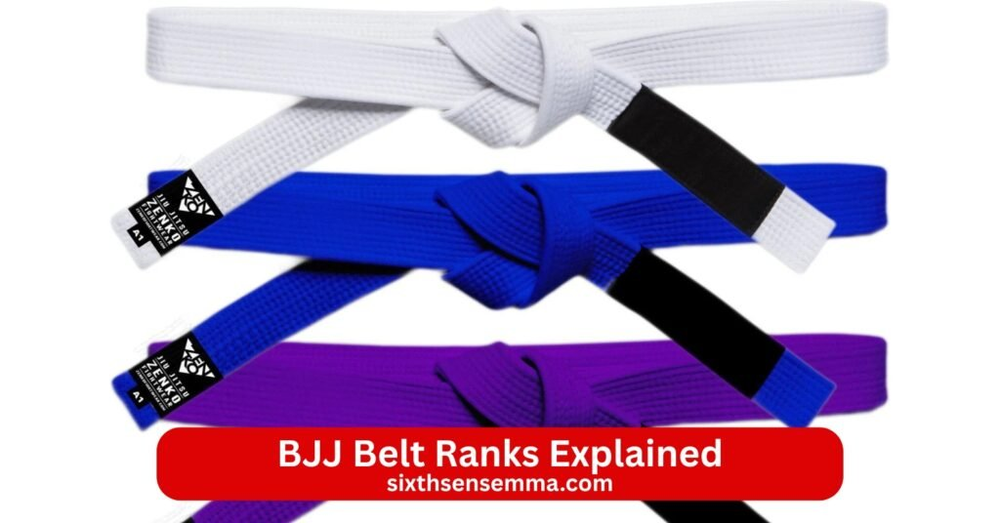
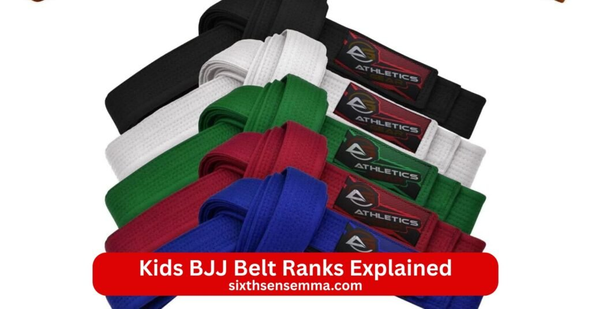

BJJ Belt Ranks Explained Your Guide to Brazilian Jiu Jitsu Progression

BJJ Belt Ranks Explained give a clear map of how brazilian jiu jitsu measures real growth from total beginner to true master. The bjj belt system uses colored belts to show skill level knowledge maturity and responsibility on the mat. White belt starts everything blue belt follows purple belt comes next brown belt prepares for the top and black belt marks expert status. Bjj belts explained help students understand what each belt level means in technique control teaching and mindset. Belt in brazilian jiu jitsu stands for years of hard rolling consistent training and proven ability not just time served.
Why Understanding BJJ Belt Ranks Matters
Understanding bjj belt ranks gives clear direction in training. Bjj belt system provides structure so students know expectations at each stage. Belt represents progress that everyone recognizes in the gym and beyond. Jiu jitsu belt system motivates people to stay consistent because each step feels earned. Belt signifies not just technique but maturity on and off the mat.
Setting Realistic Training Goals
Setting realistic training goals becomes easier when you know the bjj belt progression. White belt level focuses on survival basics defense and simple positions. Blue belt level adds guard passing escapes and basic submissions. Purple belt level practitioner handles complex chains and starts teaching others. Brown belt level refines details counters strategy and competition readiness. Black belt level shows deep mastery where the person contributes to the art. Bjj belt progression time varies but knowing these stages stops frustration from expecting too much too soon. Promotion to the next belt comes when skills match the next belt level not calendar dates.
Motivation Through Recognized Progression
Motivation through recognized progression keeps students coming back. Belt promotions celebrate milestones with bjj belt ceremonies where friends coaches and family watch the new belt color get tied on. Belt is often awarded after bjj rank testing or consistent demonstration of required skills. Bjj stripe meanings add small wins between belts with stripes showing steady improvement. Journey from white to black feels long but visible steps like stripes and new belt rank make the path exciting. Bjj black belt journey inspires many because reaching black belt in brazilian jiu jitsu stands as a huge achievement respected worldwide.
Skill and Responsibility Expectations at Each Belt
Skill and responsibility expectations at each belt grow with the adult belt system. White belt learns fundamentals stays safe and absorbs everything. Blue belt shows solid basics can roll effectively and starts building a personal game. Blue belt is the second adult rank where students feel competent yet know plenty remains to learn. Eligible for a purple belt means consistent improvement and deeper technique. Purple belt often requires at least two years from blue belt and brings teaching ability plus strong defense offense. Purple belts are generally considered qualified instructors in many gyms. Brown belt typically requires advanced knowledge strategy and leadership.
Overview of Adult BJJ Belt Ranks
Adult bjj ranks follow the brazilian jiu jitsu belt system that tracks real progress in skill knowledge and maturity. Bjj belt system for adults uses five main colored belts from white belt to black belt. Bjj belts explained show how each belt level builds on the last with clear expectations for technique control and teaching ability. Belt in brazilian jiu jitsu reflects time dedication and proven ability on the mat. Bjj belt progression takes years of consistent training rolling and learning.
White Belt – Beginner Level
White belt marks the start of the journey from white to black. White belt level focuses on survival basics like posture defense and simple positions. New students learn to stay calm tap early and absorb fundamentals without overwhelming detail. White belt is the first belt where the goal stays consistent attendance and basic understanding. Bjj promotion requirements at this stage include showing safe rolling and grasping core concepts. White to black belt path begins here with patience as the key trait.
Blue Belt – Intermediate Skills
Blue belt stands as the second adult rank in bjj belt system. Blue belt level shows solid grasp of fundamentals plus guard passing escapes and basic submissions. Blue belt is the second belt where students roll effectively and develop a personal game. Eligible for a purple belt comes after consistent improvement and deeper technique. Bjj blue belt techniques include chaining moves from different positions and handling resistance better. Belt typically requires at least one to two years from white belt depending on training frequency.
Purple Belt – Advanced Intermediate Techniques
Purple belt brings advanced intermediate skills where the practitioner chains complex sequences and counters effectively. Purple belt level practitioner has gained strong defense offense and the ability to teach beginners. Purple belt for a minimum of one to two years often precedes brown belt. Purple belts are generally considered qualified to instruct classes in many academies. Purple belt is often considered the point where jiu jitsu starts feeling natural. Belt level practitioner demonstrates strategy timing and adaptability in live rolling.
Brown Belt – Advanced Practitioner
Brown belt represents high level mastery with refined details strong strategy and leadership on the mat. Brown belt typically requires advanced knowledge competition experience and the ability to handle tough opponents smoothly. Brown belt level focuses on polishing techniques fixing weaknesses and preparing for black belt. Belt typically requires several years from purple belt with deep commitment. Practitioner at this stage contributes to the gym through coaching and example.
Black Belt – Expert / Master Level
Black belt stands as the highest rank most students aim for in brazilian jiu jitsu. Black belt in brazilian jiu jitsu signifies years of dedication deep mastery and contribution to the art. Achieve the black belt demands consistent high level performance teaching ability and character. Jiu jitsu black belt earns respect worldwide as black belts are often addressed as professor or coach. Bjj black belt journey continues beyond the black belt with degrees like red and white belt for senior ranks and coral belt for legends. Black belt level means lifelong learning where the person gives back to brazilian jiu jitsu students through knowledge and guidance.

Kids BJJ Belt Ranks Explained
Kids bjj belts follow a separate path from adults in the brazilian jiu jitsu belt system to match growing bodies minds and attention spans. Kids bjj belts use extra colored belts between white belt and blue belt so young students see frequent progress and stay motivated. Bjj belt system for children emphasizes fun safety fundamentals and character building over intense competition. Bjj promotion requirements stay age adjusted with focus on effort attitude and basic technique rather than advanced mastery. Belt promotions happen more often to build confidence and keep kids engaged.
Colored Belt Progression for Children
Colored belt progression for children typically includes white belt then gray belt yellow belt orange belt green belt before reaching blue belt. White belt starts every child with basics like posture movement and tapping safely. Gray belt adds simple positions escapes and guard retention. Yellow belt introduces submissions from mount or side control plus basic guard passing. Orange belt builds chains of attacks defense against submissions and positional dominance. Green belt refines strategy timing and light competition skills. Belt color changes mark clear steps so kids feel achievement every few months with consistent training.
Age Appropriate Skill Development
Age appropriate skill development keeps training safe and effective for young students. Younger kids focus on games coordination falling safely and social skills like respect listening and teamwork. White belt level through gray belt stresses fun drills that teach jiu jitsu without heavy pressure. Older kids around eight to twelve add technical submissions guard work and controlled rolling. Blue belt level for kids means solid fundamentals and readiness for adult classes soon. Belt level practitioner at each stage shows age suitable control like escaping bad positions defending submissions and maintaining posture.
Transition from Kids to Adult Belts
Transition from kids to adult belts happens around age fourteen to sixteen depending on maturity skill and academy policy. Kids bjj belts do not always carry straight over to adult belt system so a child with green belt or blue belt might start adult classes at white belt or blue belt after evaluation. Bjj ranking differences between kids and adults reflect physical strength mental focus and rolling intensity. Promotion to the next belt in adult ranks requires meeting bjj promotion requirements like handling adult resistance and showing advanced technique. Belt progression slows in adulthood so the journey from white to black takes longer but kids enter with strong foundations.
Techniques & Skills Expected at Each Belt
Techniques & skills expected at each belt build layer by layer in the brazilian jiu jitsu belt system. Bjj belt ranks explained show how belt level matches growing ability from survival basics to complete mastery. Belt progression ties directly to what a student can do in live rolling teaching and competition. Bjj belts explained help set clear targets so training stays focused on real improvement.
Fundamental Techniques for White and Blue Belts
Fundamental techniques for white and blue belts center on survival and strong basics. White belt level masters posture bridging shrimping and basic escapes from bad positions like mount side control and back. Students learn simple guard retention and how to stand up safely. White belt to black belt starts here with emphasis on staying calm and avoiding injury. Blue belt adds guard passing fundamentals like knee slice torreando and over under passes. Blue belt level includes basic submissions from mount armbar triangle and rear naked choke plus escapes from those same moves.
Intermediate Moves for Purple Belts
Intermediate moves for purple belts introduce chaining attacks and solid defense. Purple belt level practitioner flows between positions with guard variations like butterfly de la riva and spider guard. Purple belt often requires at least two years from blue belt and brings leg lock awareness inversions and advanced sweeps. Purple belts are generally considered qualified to teach fundamentals and handle most common attacks. Belt level practitioner shows good timing for counters and transitions plus the ability to recover from bad spots quickly. Purple belt is often considered the belt where jiu jitsu becomes instinctive rather than mechanical.
Advanced Strategies for Brown and Black Belts
Advanced strategies for brown and black belts involve deep strategy game planning and adaptability. Brown belt level refines every detail counters high level guards and develops personalized systems. Brown belt typically requires years of consistent high level training and competition experience. Black belt demands complete understanding of bjj where the person reads opponents sets traps and controls pace effortlessly. Black belt in brazilian jiu jitsu shows mastery in teaching creating techniques and contributing to the art. Black belt level includes seamless transitions between standing grappling and ground plus high percentage finishes under pressure.
Submission Mastery Control & Competition Readiness
Submission mastery control & competition readiness peak at higher belts. Purple belt starts chaining submissions like armbar to triangle to omoplata while maintaining dominant positions. Brown belt adds advanced leg locks wrist locks and subtle chokes that catch experienced opponents. Black belt achieves true mastery with precise control pressure and the ability to finish from almost any angle. Belt signifies the point where submissions feel inevitable through superior position and leverage.
How Our BJJ Training Program Supports Belt Progression
Our bjj program builds the brazilian jiu jitsu belt system into every class so belt progression feels natural steady and achievable. Bjj belt ranks explained become real through daily practice coaching and clear milestones. Bjj belt system guides students from white belt to black belt with focus on skill growth confidence and long term commitment. Belt promotions happen when ready not rushed so each belt level brings true ability.
Structured Curriculum for All Levels
Structured curriculum for all levels matches the adult belt system and kids bjj belts exactly. White belt classes teach survival basics posture escapes and simple positions through fun drills and games for kids or focused fundamentals for adults. Blue belt sessions add guard passing submissions and chaining moves with live rolling to build flow. Purple belt work dives into advanced guards leg locks and counters while brown belt refines strategy and competition prep. Black belt level includes teaching roles seminars and deep technique refinement. Kids bjj belts like gray belt yellow belt orange belt and green belt use age appropriate games and progressions that prepare for adult rank in brazilian jiu jitsu.
Personal Coaching for Faster Learning
Personal coaching for faster learning speeds up the journey from white to black. Coach gives direct feedback during rolling corrects small details and helps fix weak spots right away. Bjj rank testing preparation includes one on one sessions where students demonstrate required techniques against resistance. Personalized plans adjust for body type fitness age and goals so blue belt students master bjj blue belt techniques quicker while purple belt level practitioner gets help with complex chains. Belt typically requires consistent mat time but coaching makes every session count more. Gracie jiu jitsu ranks principles blend in where needed for extra depth. Students move toward next belt rank with clear direction instead of guessing.
Skill Assessment and Belt Promotion Guidance
Skill assessment and belt promotion guidance keeps progress honest and motivating. Regular checks track bjj stripe meanings and readiness for promotion to the next belt. Belt ceremonies celebrate new belt color with the group watching so the moment feels earned and special. Bjj belt progression time varies but assessments show exactly what needs work like better guard retention for blue belt or advanced submissions for brown belt. Belt promotions follow demonstrated ability in live rolling teaching and character not just time served.
Why Choose Sixth Sense MMA for BJJ Training
Sixth Sense MMA stands out as the best place to start or advance your brazilian jiu jitsu journey because we combine authentic bjj belt system teaching with real world support and community. Our academy focuses on the full journey from white to black while keeping training safe enjoyable and effective. Bjj belt ranks explained become clear here through structured classes honest feedback and visible progress. Students join for self defense fitness competition or fun and stay because every session builds real skill confidence and friendships. Located in Coppell Texas we welcome complete beginners kids teens and adults who want to master bjj the right way.
Certified Instructors with Real Competition Experience
Certified instructors with real competition experience lead every class at Sixth Sense MMA. Our coach team holds recognized credentials and has competed at local regional and international levels in bjj tournaments under IBJJF belt rules and other organizations. They understand what bjj promotion requirements truly mean because they have lived the bjj black belt journey themselves. Instructors know how to prepare students for bjj rank testing competitions and real life scenarios. Black belts and high degree holders teach with patience and precision so blue belt students learn solid fundamentals purple belt practitioners refine advanced chains and brown belt athletes sharpen strategy.
Beginner Friendly and Safe Training Environment
Beginner friendly and safe training environment welcomes everyone no matter age or experience. New white belt students start with slow controlled drills basic posture escapes and posture work. Coach supervision stays constant during every roll to correct form control intensity and prevent injury. Mats provide full cushioning bjj gear like gis rash guards and mouthguards get recommended and tapping happens freely without ego. White belt level focuses on survival and fun while kids bjj belts use games to build coordination safely. The no judgment atmosphere lets students ask questions try moves and grow at their own pace. Belt promotions celebrate progress with bjj belt ceremonies that make each step feel special.
Practical Self Defense and Sport Focused Techniques
Practical self defense and sport focused techniques balance both real world protection and competition readiness. Classes teach bjj as a complete self defense tool with emphasis on escaping grabs controlling larger opponents and finishing threats quickly through submission ground control and positional dominance. At the same time students prepare for tournaments by drilling high percentage moves strategy and live rolling under pressure. Blue belt level builds reliable escapes and passes purple belt adds complex chains and black belt level refines competition level details. Bjj belt system here supports both paths so whether you want to defend yourself on the street or compete on the mat training fits your goals perfectly.
Flexible Class Schedules and Affordable Packages
Flexible class schedules and affordable packages make consistent training easy for busy lives. Sessions run multiple times per week with morning evening and weekend options for kids teens adults and families. Beginners can start with trial classes to experience white belt fundamentals without commitment. Monthly packages offer unlimited access drop in rates and family discounts keep costs reasonable. No hidden fees appear and payment plans help long term students stay consistent. Bjj belt progression time varies but flexible timings let you train regularly so you reach next belt rank faster.
Contact US
Ready to start your BJJ Belt Ranks Explained journey and join the brazilian jiu jitsu path at Sixth Sense MMA? We make it easy to get in touch ask questions book a free trial class check current schedules or learn about bjj promotion requirements flexible timings and affordable packages that fit your life. Whether you’re a complete white belt beginner wanting to understand the white to black belt progression a parent looking for kids bjj belts programs or an experienced student aiming for blue belt purple belt brown belt or black belt our team answers fast and helps you find the right fit.
- 817 S MacArthur Blvd #100 Coppell TX 75019 United States
- (469) 972 7800
- info@sixthsensemma.com
Conclusion
BJJ Belt Ranks Explained show the true heart of brazilian jiu jitsu—a path built on patience real skill and steady growth from white belt to black belt. The bjj belt system uses colored belts to mark every earned step where white belt teaches survival blue belt builds confidence purple belt brings depth brown belt adds mastery and black belt proves lifelong dedication. Kids bjj belts keep the same spirit with extra colors and age adjusted fun so young students stay excited and safe.
Follow Us on Social Media
Stay connected with Sixth Sense MMA through our social media channels. Follow us for class updates, training tips, and a closer look at our self defense community.
FAQ’s
The Brazilian Jiu-Jitsu belt system for adults goes white, blue, purple, brown, and black. Higher degrees include coral belts (red/black and red/white) and the rare red belt for grandmasters.
Mark Zuckerberg is currently a blue belt in Brazilian Jiu-Jitsu. He was promoted in 2023 by his coach Dave Camarillo after consistent training and competition experience.
Keanu Reeves holds a white belt in Brazilian Jiu-Jitsu. He has trained extensively for film roles but has not pursued formal promotions through the belt system.
The 80/20 rule in BJJ means 80% of your success comes from mastering 20% of the most effective techniques. Focus on high-percentage moves and smart training.
Yes, Keanu Reeves remains a white belt in Brazilian Jiu-Jitsu. Despite training with top instructors for movies, he has not advanced through official belt ranks.
Brazilian Jiu-Jitsu (BJJ) is generally better for modern self-defense and sport due to live sparring and ground fighting. Japanese Jiu-Jitsu (JJJ) excels in traditional techniques.
John Wick, the fictional character, has no official belt rank. Keanu Reeves, who plays him, is a white belt in real-life Brazilian Jiu-Jitsu training.
Elon Musk’s exact Brazilian Jiu-Jitsu belt rank is not publicly confirmed. He trains occasionally with high-level coaches but has no official belt promotion announced.
Conor McGregor is a black belt in Brazilian Jiu-Jitsu. He earned his promotion in 2023 from coach John Kavanagh after years of dedicated training.
No, Tom Cruise is not a black belt in Brazilian Jiu-Jitsu. He has trained in BJJ and other martial arts for films but holds no high ranks.
Jason Statham is a purple belt in Brazilian Jiu-Jitsu. He has trained consistently under Renzo Gracie and Roger Gracie for over fifteen years.
Jim Carrey is a brown belt in Brazilian Jiu-Jitsu. He has trained under Royce Gracie for many years and remains dedicated to the art.
Train with us in Coppell
The first class is free. Shorts, a t-shirt and a water bottle. We lend the rest.
Book a free class